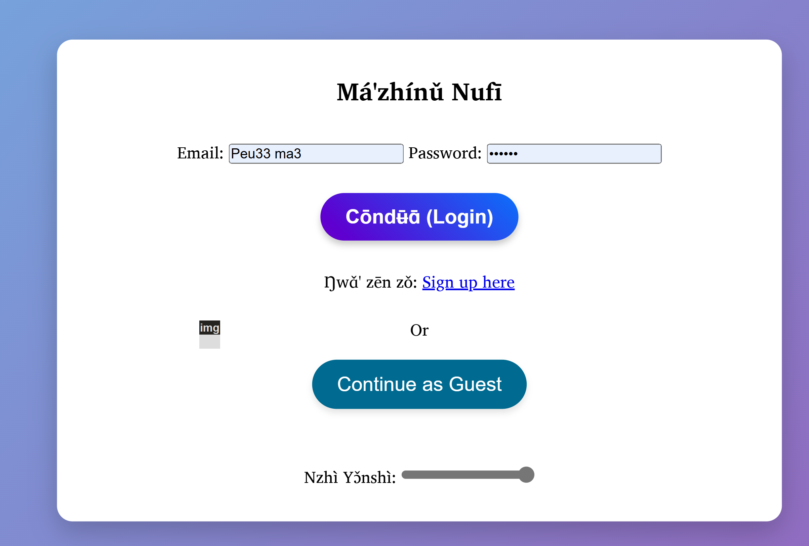

About the Project
Má'zhínǔ Nufī is an interactive quiz application designed to help users learn the Nufi language. The app dynamically fetches quiz content from Firebase Firestore, enabling real-time updates and a gamified learning experience.
Key Features
- Dynamic quiz content fetched from Firebase Firestore for real-time updates.
- Timers, score tracking, and audio feedback for enhanced learning engagement.
- Customizable quiz options including difficulty levels and topics.
- Responsive design suitable for both mobile and desktop devices.
- Leaderboards showcasing user performance for community engagement.
- Integrated authentication supporting guest users and registered accounts.
Technologies
- Frontend: HTML, CSS, and JavaScript for a responsive and user-friendly interface.
- Backend: Firebase Firestore and Authentication for real-time database management and user authentication.
- Automation: Python scripts for bulk uploading quiz data to Firestore from CSV files.
Challenges and Solutions
- Real-Time Updates: Implemented Firestore listeners to update content dynamically without page reloads.
- Leaderboards: Optimized Firestore queries to ensure fast retrieval and sorting of user scores.
- Accessibility: Improved keyboard navigation and ensured the interface adheres to accessibility standards.
Impact
This project helps preserve the Nufi language by providing an engaging platform for language learning. It empowers users to reconnect with their heritage while making the learning process fun and interactive.
My Role
- Designed and developed the entire application, from front-end UI to Firebase backend integration.
- Implemented gamification elements like timers, scoring, and audio feedback.
- Created a Python automation script for uploading quiz data to Firestore.
- Integrated authentication features to support both guest and registered users.
- Developed leaderboards to display user performance dynamically.
Future Enhancements
- Expand quiz content to include more topics and difficulty levels.
- Integrate gamified features such as badges and rewards to motivate learners.
- Introduce voice recognition for practicing Nufi pronunciation.
Contact Me
Interested in this project or similar collaborations? Reach out at tchamna@gmail.com.